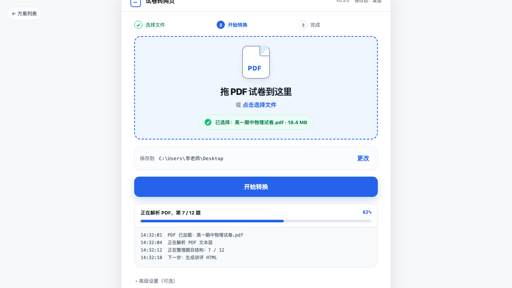
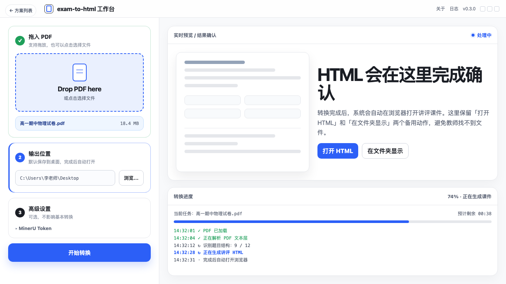
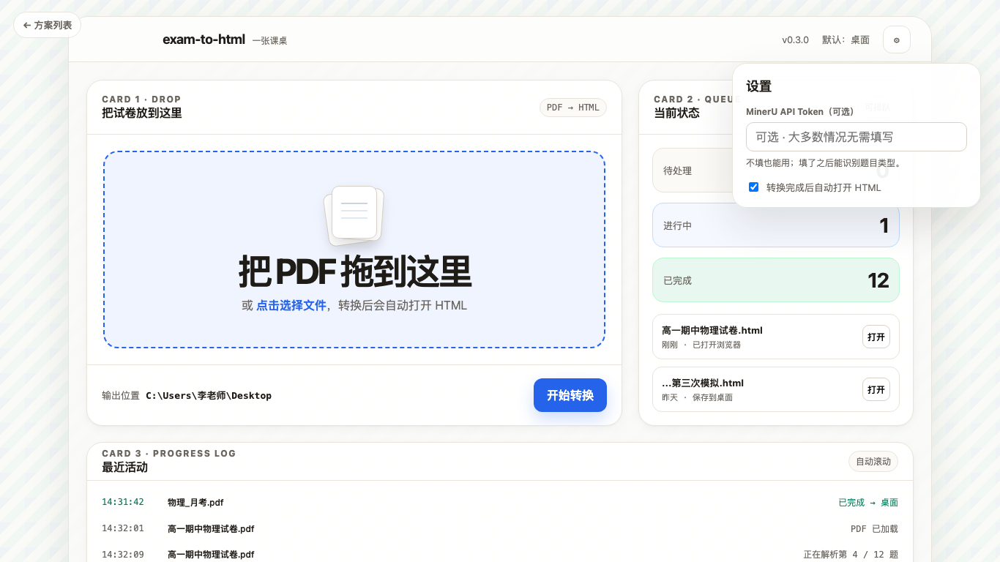
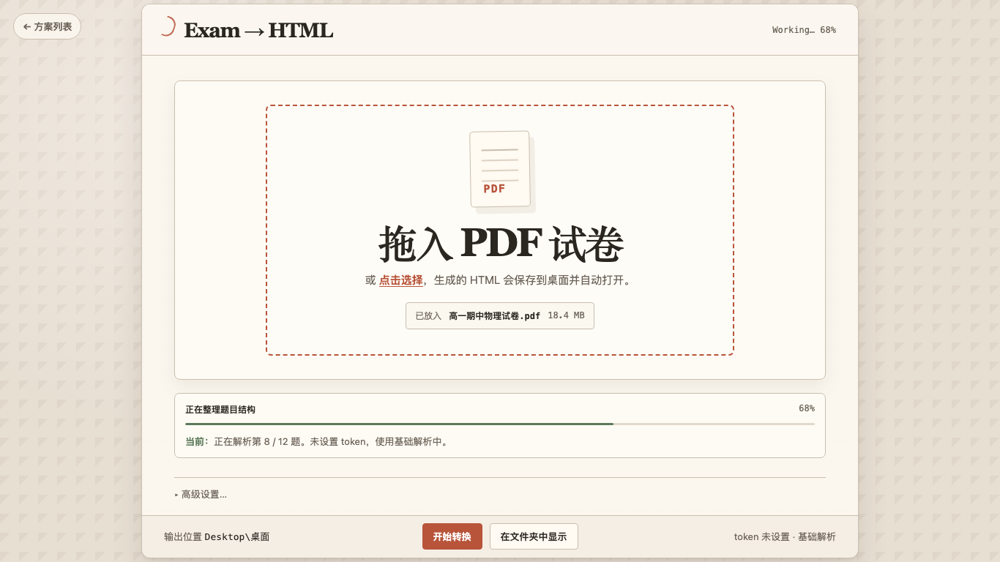
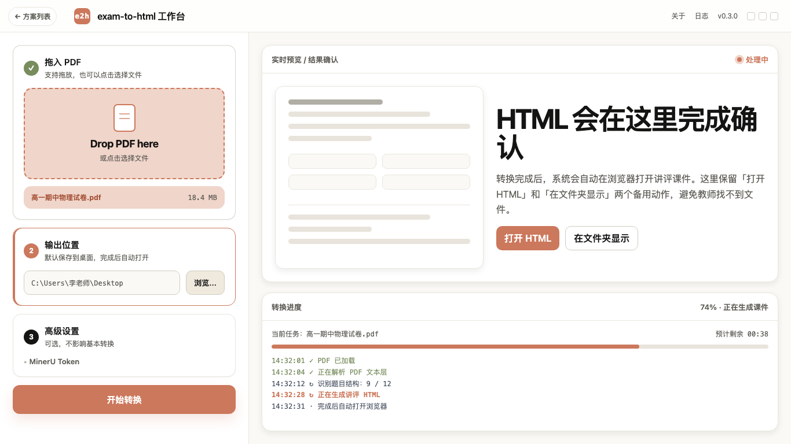

Exam to HTML · M2 UI 方向选择
下面是 4 个可直接打开的静态 HTML 方案。它们都遵守设计文档主线：教师只看见「拖 PDF → 开始转换 → HTML 自动打开」，输出位置默认桌面，高级设置折叠，不主动推销 MinerU token。




我的初步判断：如果目标是 M2 稳健落地，优先选 01；如果想让产品一眼不像 demo，选 02；如果已经确定要支持多 PDF 队列，选 03；04 适合后续品牌化，但不是第一优先。